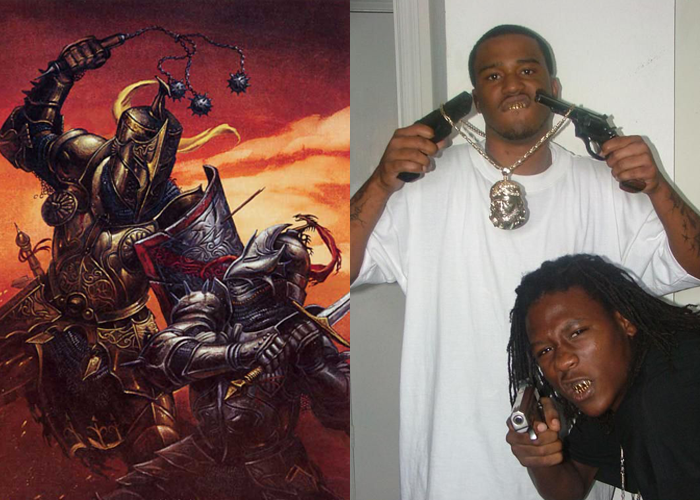

Today's "What If": What if Knights were just Gangstas?
by phil on Wednesday Jul 28, 2010 1:06 AM

We cling onto this idea that knights were heroes and role models. But what if, at that time, they carried the same connotation as gangsters and drug lords today? I got this idea while reading this New Yorker article about Mexican drug lords and how in the absence of government, drug lords in Mexico were regarded with deep respect in some regions. Members of their communities perceived the gangsters as being gentlemen and adhering to a strict code. This is then juxtaposed with stories of dismembered limbs wrapped in newspapers strewn across the sidewalk. What if knights were just dapper thugs? What if "killing for the glory of their King" was the same as "gettin' respect" or "enforcing one's rep'." What if they were generally minorities (dark-skinned folks from Spain), and what if they spoke with what, at the time, were considered vulgar dialects (now our English).
Comments
James said on September 6, 2010 1:32 AM:
Gangstas only exist because of our government turning a blind eye to statistics. Legalize marijuana and, voila! 65-70% of mexican drug cartel profits are sucked away.
earthman said on September 6, 2010 8:26 AM:
The ruling class was a sort of gang organized like a tree with branches- each lower level knight swearing personal loyalty to someone above him. This went on up to the king. In parallel, land was awarded and subdivided so even the lower "nobles" had land and peasants to exploit.
These people often fought among themselves for more land and wealth; they were obligated to fight for their lords, and all had to fight for the king. In addition, they had to pay a tax to their lords.
These were extremely superstitious people, from king to peasant, milked by the freeloading church on the pretext of forgiveness of guilt and the threat of excommunication.
They had violence in common with our gangs, but a lot was different.